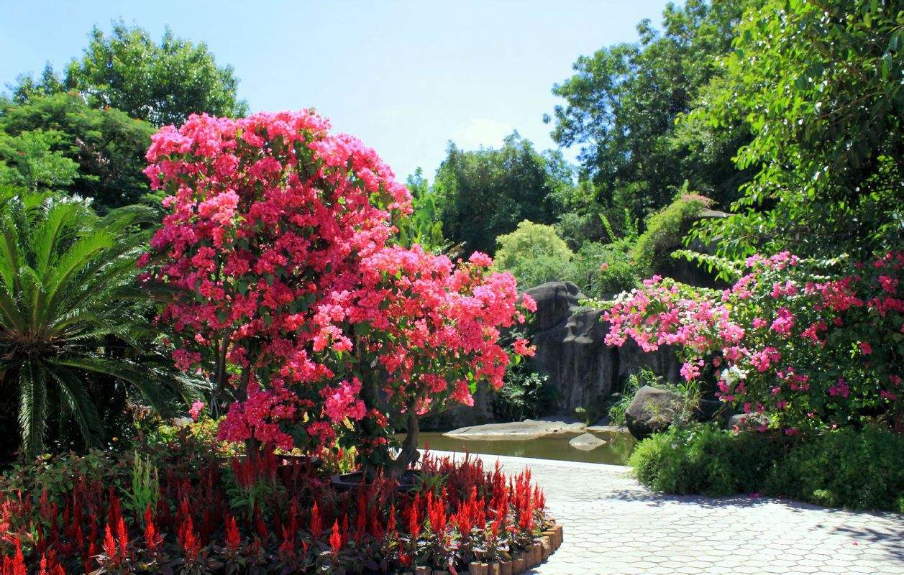
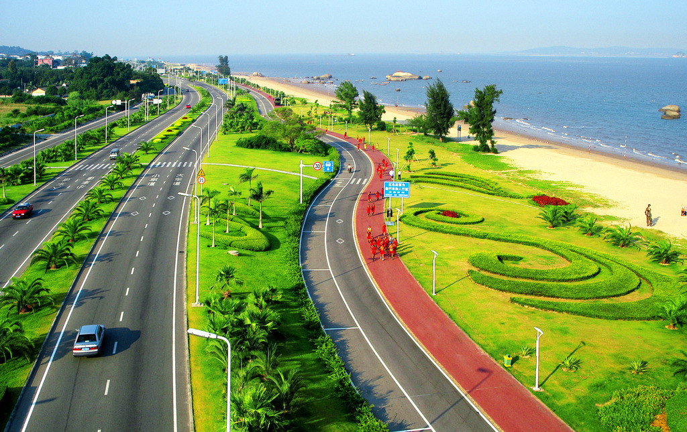

禅茶
-

- 
禅茶一味吉祥之旅
行程概要
- 行程天数1日游
- 目 的 地厦门
- 线路类型金砖雅游
- 推荐指数★★★★★
- 行程特色禅茶一味
线路介绍
费用说明
预订须知
相关产品
线路介绍
-
第1天
D1
第1天
禅茶一味吉祥之旅
行程安排
9:00 酒店出发。
9:00-10:10 乘车游览与台湾一水之隔的滨海大道、世界上最美丽的马 拉松赛道【环岛路观光道】；游览国家级文物保护单位、 全国 4A 级旅游景区、昔日海防要塞【胡里山炮台】，始 建于清光绪二十年，分为战坪区、兵营区和后ft区，炮台 结构为半地堡式、半城垣式，炮台上最有名的是 1893 年 购自德国克虏伯兵工厂的一门克虏伯大炮，有效射程可达 19760 米。该炮曾在 1937 年的抗日战争中击沉日军舰， 首开中国战区击沉日舰的辉煌战绩。
10:25-11:25 游览国家首批 4A 级旅游区、国家级科普教育基地、福建 省首批环境教育基地【厦门园林植物园】
11：35-12:35 参观省级文物保护单位、闽南千年古刹【南普陀寺】，因 其供奉观世音菩萨，与浙江普陀观音道场类似，又在普陀山以南而得名“南普陀寺”，为闽南佛教胜地之一。全 国闻名的佛教高等学府——闽南佛学院就坐落于此，与厦 门大学仅一墙之隔，却有两种意境：“古朴与摩登并存， 小和尚和大学生为邻”。
12:35-13:35 午餐
13:35 返回酒店。
景点 · 环岛路
环岛路是厦门国际马拉松比赛的主赛道，被誉为世界最美的马拉松赛道。绕着环岛路骑自行车，聆听海浪，轻拂海风，真的是一种享受。
环岛路连接了众多景点，胡里山炮台、上李水库、“一国两制统一中国”标语牌、国际会展中心，以及庙宇、古树、奇石、雕塑和三个临海广场。
沿线还建有椰风寨、玩月坡、数星园、海韵台等设施，串连成五彩缤纷、内容丰富的海滨旅游观光带，构成一幅蓝天、大海、阳光、沙滩、草地、绿树、鲜花和红色人行道共同组成的东岸游闲区，令人恋恋不舍。
在环岛东路的草坪上，立有97座栩栩如生的马拉松赛跑运动员铜雕像。他们姿态各异，或驻足，或奔跑。雕像延伸2千米，一直到国际会展中心。在环岛路上远望，海岸线曲折起伏，海景宜人，大担、二担、槟榔屿、小金门等岛屿一览无余，大金门也隐约可现。
环岛路骑车慢行，别有韵味。

环岛路

环岛路

环岛路
景点 · 胡里山炮台
厦门胡里山炮台景区系国家级文物保护单位，始建于清光绪二十年（1894年）三月初八，竣工于1896年十一月初八，是中国洋务运动的产物，历史上被称为“八闽门户、天南锁钥”。
炮台用花岗石条建造，并以乌樟树汁和石炭、糯米拌泥沙夯筑而成,坚固异常。整个建筑糅合欧洲半地堡式和中国明清时期防御阵地的结构模式，形成科学合理的防御体系。用优质花岗岩筑成的城门、城墙、城楼、护城壕、清兵营房和炮台等保留完整，是研究我国海防军事史、洋务运动史和兵工构筑技术的珍贵史迹。
炮台上最有名的是1893年购自德国克虏伯兵工厂的一门28生（280mm）克虏伯大炮，至今保存完好，有效射程可达16000米（最远射程19760米） 花了白银10万两才购得（含海运及保险费）。该炮曾在1937年的抗日保卫战中击沉日军“箬竹”型13号舰，首开中国战区击沉日舰的辉煌战绩。
胡里山炮台的克虏伯大炮曾被鉴定为“世界现存原址上最古老最大的十九世纪海岸炮”,并荣获大世界基尼斯最佳项目奖。
胡里山炮台深入挖掘历史文化内涵，打造了克虏伯大炮和红夷火炮操演两个核心品牌，“迎客仪式”表演、“牵手柜台”项目、高仿真机器人硅像馆、4D影院、幻影成像剧场、击沉日舰史料馆、光绪朝朱批奏折、独木成林等三十余个配套项目
这些融新、奇、特、的平面、立体、静态和动态的文化旅游产品彻底改变了胡里山炮台景区曾经只有一门大炮的历史，丰富了景区产品结构和文化内涵，提升了景区旅游档次，使胡里山炮台成为一个“国内一流、国际知名”的文化旅游景点，每年接待中外游客突破一百七十万人次，成为了厦门旅游城市的名片和窗口，是一个集观光游览、历史文化体验为一体的主体性景区。
胡里山炮台地理位置独特，东面与金门岛隔海相望，南与漳州临海，西与鼓浪屿遥相辉映，北面是繁华市区距高崎机场仅需二十分钟，距轮渡码头仅需十分钟，距火车站仅需十五分钟，交通十分便捷。

胡里山炮台

胡里山炮台

胡里山炮台
景点 · 园林植物园
厦门市园林植物园位于厦门岛东南隅的万石山中，始建于1960年，是福建省第一个植物园，是鼓浪屿??万石山国家级重点风景名胜区的重要组成部分，占地4.93平方公里。作为厦门市开发较早的重点景区和浏览胜地之一。厦门旧有二十四景，在植物园范围内就有其中六景，即“万笏朝天”、“中岩玉笏”、“天界晓钟”、“太平石笑”、“紫云得路”、“高读琴洞”，涵盖山、洞、岩、寺诸景观，历代摩崖石刻众多，是风景名胜荟萃之地。新厦门二十名景中，本园内也有三景：万石含翠、天界晓钟、太平石笑从现存的摩崖石刻看，游览胜地的形成至少可追溯到明代万历年间，如天界醉仙岩“醴泉洞”三字为明代万历十一年（即1583）傅钺所刻，长啸洞东石壁留有万历戊申年（1608年）施德政等三位抗倭将领登高望远，情怀激荡，相互唱和的诗句，更有民族英雄郑成功屯兵厦门遗迹多处。至清代，岩寺、摩崖题刻更多，这充分表明此时不仅僧众修持礼佛，厦门名士和一般市民也来此登山踏青，游览胜境已十分普遍。作为风景名胜区的重要组成部分，多年来，厦门园林植物园从规划着手，倾力保护原有自然景观和人文景观，修复多条登山步游道，控制违章建筑，使旧有名景点、众多摩崖石刻得以基本保存完好。

园林植物园
园林植物园

园林植物园
景点 · 南普陀寺
南普陀寺位于市区五老峰下，面对龙海市南太武山，南面是厦门大学。南普陀寺是厦门著名古刹。建于明代永乐年间(1403-1424年)，明末（1628年）毁于兵火。
清康熙二十三年（1684年），靖海侯施琅将军重建，因寺院是奉观音菩萨为主，又位在我国四大佛教道场之一的浙江舟山普陀山之南，故称南普陀寺。
南普院寺规模宏大，总占地25.8公倾，建筑面积21270平方米。从南到北主轴有天王殿、大雄宝殿、大悲殿和藏经阁四座，加上左右庑廊，钟楼鼓楼、功德楼、海会楼、普照楼、太虚图书馆、佛学院教室、养正院等。所有这些建筑依傍山势，层层托高，庄严肃穆。近些年来，在天王殿南面有放生池、两座新建的万寿塔和两个凉亭以及荷花池等，在两池之间有七座由释迦牟尼佛、迦叶佛等七尊佛像组成的七佛塔，万寿塔高11层，富有南亚佛教建筑的风格，使南普陀寺风景更加美丽。
南普陀寺
南普陀寺
南普陀寺
温馨提示
1.本行程酒店正常办理入住时间均为14：00，若您于14：00之前到达，酒店如有空房即可安排入住，如没有您可以将行李先寄存在前台，自行外出游览再办理入住，抵达酒店后报预订人姓名，拿入住人证件（成人请提供身份证原件等有效证件，儿童请出示户口本原件）办理入住手续。
2.标间/大床随机安排，如有特殊需求，请签约前与您的专属客服进行确认，尽量安排不保证
3.此接机服务非我公司专车，会有其他同时间抵达的客人一同搭乘，逐一送至酒店，请您见谅。
2.标间/大床随机安排，如有特殊需求，请签约前与您的专属客服进行确认，尽量安排不保证
3.此接机服务非我公司专车，会有其他同时间抵达的客人一同搭乘，逐一送至酒店，请您见谅。
4.在厦住店中国籍旅客必须凭身份证办理入住，不支持护照等其他有效身份证件，请您务必使用身份证哦。
早餐：无；午餐：有；晚餐：无
出行须知
注意事项
• 为了您人身、财产的安全，请您避免在公开场合暴露贵重物品及大量现金。上街时需时刻看管好首饰、相机等随身物品。
•游泳、漂流、潜水、滑雪、溜冰、戏雪、冲浪、探险、热气球、高山索道等活动项目，均存在危险。参与前请根据自身条件，并充分参考当地相关部门及其它专业机构的相关公告和建议后量力而行。
•为确保锂电池的安全运输，避免发生不安全事件，我们友情提醒您，民航局将对旅客携带锂电池乘机进行严格检查。详情请参考 民航局关于旅客行李中携带"锂电池、充电宝"乘机规定的公告。
•乘坐国内航班的旅客，居民身份证过期不能继续使用。若有效期满的，可以凭临时居民身份证或公安机关出具的贴有本人近期免冠证件照、并加盖户籍专用章、注明有效期的《申领居民身份证回执》作为有效乘机身份证件替代使用。同时中华人民共和国护照可以作为有效乘机身份证件，办理国内航班购票、值机、安检手续；旅客乘坐国内航班，办理购票、值机、安检手续时，应当使用同一个有效乘机身份证件。中国大陆地区居民使用往来港澳通行证、往来台湾通行证乘坐国内航班的旅客，必须同时提供居民身份证或者民用机场公安机关签发的《乘坐民航飞机临时身份证明》才可办理登机手续。 特别提醒：凡是乘机的16周岁以下中国大陆地区居民（包含婴儿），务必出示包括出生证明、户口薄或户口所在地公安机关出具的身份证明（16周岁以下的人需在户籍所在地派出所出具身份证明，机场派出所无法开具临时证明）才可办理登机手续。 具体实施细则以机场相关部门指导意见为准。
 330445074@qq.com
330445074@qq.com 12345
12345